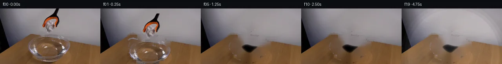

![首帧]()

Round 00
2026-11-06T04:26:26.467625+00:00像素候选变化代码 +382/−0inspection 更新
pixels cdf391c292938028 · code 67dc127e85f6122a
查看本轮 generate.py 真实 diff
--- previous/generate.py
+++ current/generate.py
@@ -0,0 +1,382 @@
+#!/usr/bin/env python3
+"""Generate 20-frame animation of paper released from grabber into water bowl.
+
+PixelWorld-Text: case_0135 at 256×144, 4fps, 5 seconds.
+Frame 00 must exactly match first_frame.png.
+Uses: pixel extraction, cv2 inpainting, gravity animation, splash synthesis.
+"""
+
+import numpy as np
+from PIL import Image, ImageDraw
+import cv2
+from scipy.ndimage import uniform_filter, gaussian_filter, distance_transform_edt
+from pathlib import Path
+import sys
+
+# ── workspace paths ──────────────────────────────────────────────────
+CASE_DIR = Path(__file__).parent
+sys.path.insert(0, str(CASE_DIR))
+from artifact_io import save
+
+TMP = CASE_DIR / ".tmp"
+TMP.mkdir(exist_ok=True)
+FRAME_W, FRAME_H = 256, 144
+N_FRAMES = 20
+FPS = 4
+
+# ══════════════════════════════════════════════════════════════════════
+# 1. Load first frame & compute paper mask
+# ══════════════════════════════════════════════════════════════════════
+
+first = np.array(Image.open(CASE_DIR / "first_frame.png")).astype(np.uint8)
+assert first.shape == (FRAME_H, FRAME_W, 3), first.shape
+
+brightness = first.astype(np.float64).dot([0.299, 0.587, 0.114])
+
+def make_paper_mask(img):
+ """Segment crumpled paper using local contrast and brightness."""
+ bri = img.astype(np.float64).mean(axis=2)
+ local_mean = uniform_filter(bri, size=15)
+ contrast = bri - local_mean
+
+ # Paper is brighter than local bowl background
+ mask = (contrast > 15) & (bri > 95)
+
+ # Clean up with morphology
+ kernel3 = np.ones((3, 3), np.uint8)
+ mask_u8 = mask.astype(np.uint8)
+
+ # Dilate to connect fragments
+ dilated = cv2.dilate(mask_u8, kernel3, iterations=2)
+ # Close holes
+ closed = cv2.morphologyEx(dilated, cv2.MORPH_CLOSE, np.ones((7, 7), np.uint8))
+ # Fill any remaining holes
+ contours, _ = cv2.findContours(closed, cv2.RETR_EXTERNAL, cv2.CHAIN_APPROX_SIMPLE)
+ filled = np.zeros_like(closed)
+ cv2.drawContours(filled, contours, -1, 1, -1)
+ # Erode slightly to avoid edge artifacts
+ final = cv2.erode(filled, kernel3, iterations=1)
+
+ return final.astype(bool)
+
+paper_mask = make_paper_mask(first)
+print(f"Paper mask: {paper_mask.sum()} pixels")
+
+# Feather the mask edges for soft blending
+paper_mask_soft = gaussian_filter(paper_mask.astype(np.float32), sigma=0.8)
+
+# Also create a slightly larger mask for inpainting (includes shadow transition)
+paper_mask_dilated = cv2.dilate(paper_mask.astype(np.uint8),
+ np.ones((5,5),np.uint8), iterations=2).astype(bool)
+
+# ══════════════════════════════════════════════════════════════════════
+# 2. Create background layer (inpaint behind paper)
+# ══════════════════════════════════════════════════════════════════════
+
+# Use cv2 inpainting to fill behind the paper
+bg_inpaint = cv2.inpaint(first, paper_mask_dilated.astype(np.uint8),
+ inpaintRadius=5, flags=cv2.INPAINT_TELEA)
+print("Background inpainting complete")
+
+# For a smoother background in the central paper area, blend inpainted with
+# distance-weighted fill from the surrounding bowl edge
+def distance_fill(img, mask):
+ """Fill masked pixels with distance-weighted average of boundary pixels."""
+ result = img.copy()
+ # Get distances from mask boundary (inside mask)
+ dist_in = distance_transform_edt(mask)
… diff truncated; 295 more lines …